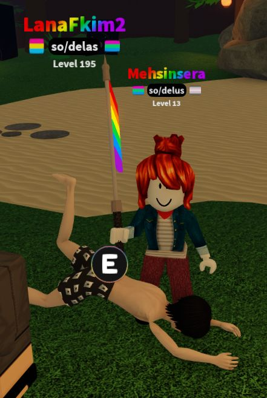
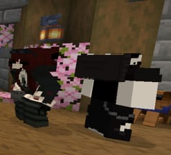
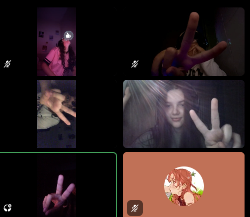
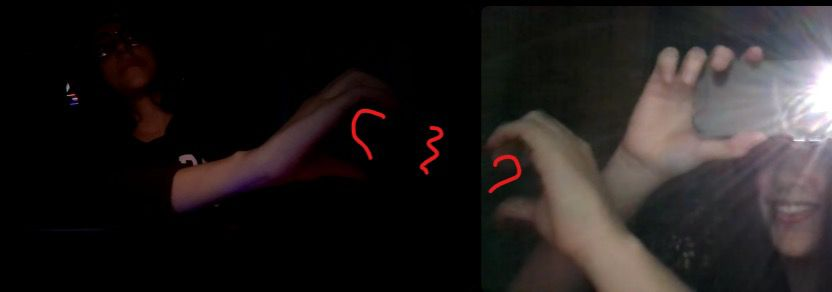

Projeto Acadêmico - Análise e Desenvolvimento de Sistemas
<details> e os elementos de mídia estão carregando corretamente no seu dispositivo.
Status do teste: Concluído com sucesso!
Brincadeira! O código está funcionando normal eu só queria fazer alguma coisa especial pro seu aniversario mesmo que não esteja perfeito ainda...


Status do teste: Memórias Carregadas.
Olha ela bbzinha coisa mais linda modesu, nem parece que ta fazendo 21 anos
Como pode ser bonita até beijando um pexe..
(essa foto ficou gigantescamente gigante e eu nao sei pq, depois eu aprendo como ajeita)
O bom é que da pra ver sua beleza melhor he
Mesmo a gente não se conhecendo pessoalmente eu ainda levo vc com se estivesse aqui cada momento cmg


Aqui eu fiz um contador de dias que a gente se conhece mas como eu não sei exatamente quando foi eu coloquei a data da nossa primeira conversa
ele é em tempo real então vc pode entrar aqui a hora que quiser e ver
🎉 FELIZ ANIVERSÁRIO! 🎉
Ebaaa agora que vc ja passou por todas as etapas aqui esta o seu presente muito especial, espero que goste
ID do Projeto: #2026-ADS-UNIJORGE